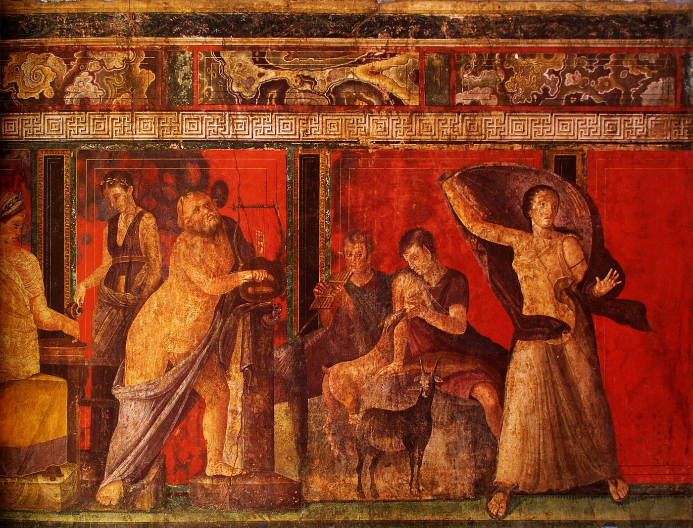

Die Anatomie ist das Schicksal.
Sigmund Freud, “Der Untergang des Ödipuskomplexes” (1924)
I
Freud’un fallusa dair düşüncesi, çocukların cinsellik hakkında kurdukları kuramlarla başlar. 1908’de yayımladığı bir yazıda, küçük çocukların ilk cinsel kuramlarından birinin, bütün insanların, kadınlar da dahil, aynı organa sahip olduğu inancı olduğunu gözlemler. Bu gözlem, 1923 tarihli Bebeksi Genital Örgütlenme makalesinde bir gelişim evresine dönüşür: Freud’a göre çocuğun cinsel gelişiminde, her iki cinsiyetten çocuk için de belirleyici olan şeyin iki cinsel organın varlığı değil, tek bir organın, fallusun varlığı ya da yokluğu olduğu bir “fallik evre” vardır.1 Cinsiyet farkı bu evrede bir şeye sahip olmak ile ondan yoksun olmak arasındaki karşıtlık olarak yaşanır.
Kastrasyon kompleksi bu karşıtlığın etrafında kurulur. Erkek çocuk için kastrasyon bir tehdit, kız çocuk için ise gerçekleşmiş bir yoksunluk olarak yaşanır. Freud 1924’te Ödipus kompleksinin çözülüşü üzerine yazdığı makalede, Napolyon’un bir sözünü değiştirerek epigraf olarak aldığım cümleyi kurar: Anatomi kaderdir. Bir yıl sonra, Cinsiyetler Arasındaki Anatomik Farkın Bazı Psişik Sonuçları’nda, “penis hasedi” kavramını ortaya atar ve kız çocuğunun gelişimini bu hasedin dönüşümleri üzerinden açıklar.2
II
Freud’un bu görüşleri, daha kendi döneminde, psikanaliz tarihinin en canlı tartışmalarından birine yol açtı. Karen Horney, 1926’da yayımladığı Kadınlıktan Kaçış’ta, Freud’un kız çocuğunun gelişimine dair tablosunun, küçük bir oğlan çocuğunun kızlar hakkında kurduğu fantazmalarla şaşırtıcı biçimde örtüştüğünü göstererek, kuramın erkek bakışının bir ürünü olabileceğini öne sürdü. Ernest Jones, 1927’de, kadın cinselliğini erkeğinkinin bir eksikliği olarak değil, kendi özgül gelişimine sahip bir süreç olarak düşünmeyi önerdi ve her iki cinsiyet için de temel korkunun, cinsel arzu kapasitesinin tümüyle yitirilmesi olduğunu söyleyerek bu korkuya aphanisis, yani yok oluş adını verdi.3 Melanie Klein da kız çocuğunun ilk bağının anneye yönelik olduğunu ve fallik evreden çok önceki fantazmaların belirleyici olduğunu vurguladı.
Bu tartışma sonraki on yıllarda feminist düşünürlerin de başlıca konularından biri oldu. Simone de Beauvoir’dan Kate Millett’e uzanan bir çizgi Freud’u, ataerkil önyargıları bilim kılığına sokmakla eleştirdi. 1974’te ise İngiliz feminist ve psikanalist Juliet Mitchell, Psikanaliz ve Feminizm’de beklenmedik bir savunma yaptı: Freud’un kuramı ataerkilliğin bir savunusu değil, ataerkil bir toplumda kadınlığın ve erkekliğin nasıl üretildiğinin bir çözümlemesidir; feminizm onu reddetmek yerine kullanmalıdır.4 Mitchell’in bu okumayı mümkün kılan kaynağı, Lacan’dı.
III
Lacan, 9 Mayıs 1958’de, Münih’teki Max Planck Enstitüsü’nde, psikiyatr Paul Matussek’in davetlisi olarak, Almanca bir konferans verir. Die Bedeutung des Phallus, “Fallusun Anlamı” başlığını taşıyan bu konferans, sonradan Écrits’ye girecek ve Lacan’ın en çok okunan metinlerinden biri olacaktır.5 Lacan burada, kavramı Freud’un biyolojiye karışan dilinden bilinçli olarak ayırır. Ona göre fallus, Freud’un öğretisinde bir fantazm değildir; kısmi, iç ya da ilişkisel bir nesne de değildir; hele ki simgelediği organ, penis ya da klitoris hiç değildir. Fallus bir gösterendir: anlamlandırmanın etkilerinin bütününü belirlemeye yazgılı, ayrıcalıklı bir gösteren.
Burada sorulması gereken soru açıktır: Bu ayrıcalıklı gösterenin adı neden fallustur? Lacan bu soruya aynı metinde, yarı alaycı, yarı ciddi üç gerekçeyle yanıt verir. Fallus, cinsel birleşmenin gerçekliğinde yakalanabilecek en çıkıntılı, en göze çarpan şey olduğu için seçilmiştir. Aynı zamanda, kelimenin harfiyen, matbaacılık anlamında en simgesel olandır, çünkü birleşmede mantıktaki bağlacın, iki terimi birbirine bağlayan ekin yerini tutar. Ve kabarmasıyla, kuşaktan kuşağa geçen yaşam akışının imgesidir.6 Bu gerekçelerin hiçbiri bir üstünlük iddiası taşımaz. Üçü de bir imgenin neden bir gösteren olarak seçilmeye elverişli olduğunu açıklar: görünür olması, bağlaması, aktarması. Fallus, bedenin bir parçası olarak değil, bedenin dile geçtiği yerin bir işareti olarak seçilmiştir. Lacan’ın deyişiyle o, logosun payının arzunun ortaya çıkışıyla birleştiği izin ayrıcalıklı göstereni olarak işler.
Bu tanımın en şaşırtıcı yanı, fallusun ancak örtülü kaldığı ölçüde işlediği iddiasıdır. Lacan bunu, Pompeii’deki Gizemler Villası’nın büyük salonundaki ünlü fresklere göndermeyle anlatır: Bir inisiyasyon töreninin betimlendiği bu fresklerde, örtüsü kaldırılmak üzere olan bir fallus, bir gizlilik ve beklenti işareti olarak durur. Fallus, gösterilmek için değil, sezdirilmek için vardır; örtüsü kaldırıldığı anda anlamını, gücünü, büyüsünü yitirir. Örtünün kaldırılmak üzere olduğu o an, freskteki figürlerin bir kısmı korkuyla geri çekilir, bir kısmının yüzünde utanç belirir. Lacan’ın deyişiyle fallus, bir gizlilik, bir latans işaretidir.
Fresk, 1909’da Pompeii surlarının hemen dışındaki bir villanın kazısında gün ışığına çıktı ve bugün antik dünyanın en çok tartışılan resimlerinden biridir. Kırmızı bir zeminin üzerinde, odanın duvarları boyunca uzanan bir dizi sahnede, genç bir kadının bir törene hazırlanışı, okunan bir metin, Dionysos’un kucağına yaslandığı bir figür ve bir maskeye bakan bir genç izlenir. Lacan’ın andığı sahnede diz çökmüş bir kadın, bir harman sepetinin, Yunanca adıyla bir liknon’un içinde duran ve bir örtünün altında dik yükselen bir nesnenin örtüsünü kaldırmak üzeredir. Hemen yanında kanatlı bir kadın figürü elindeki kamçıyı kaldırmış, sırtı çıplak, başını bir başka kadının kucağına gömmüş genç bir kadına vurmak üzeredir.7 Örtünün altındaki nesneye kimse doğrudan bakmaz. Freskin dramı, gösterilen bir şeyde değil, gösterilmek üzere olan ve gösterilmeyen bir şeyde, bir eşikte kurulur. Lacan da metninde tam bu eşiğe dikkat çeker: Antik gizem töreninde fallusun örtüsünün kaldırıldığı anda, Yunanların Aidos dediği utanç cininin ortaya çıktığını yazar.8 Utanç, örtünün kalktığı yerde doğar; ve utancın doğduğu yerde, fallus artık bir anlam taşımayı bırakıp bir korkuya, bir geri çekilmeye dönüşür.
Antik dünyada fallik imgenin işlevi bu eşikle sıkı sıkıya bağlıydı. Romalılar küçük çocukların boynuna, kötü gözden korunsunlar diye, fascinum adını verdikleri küçük fallik muskalar asarlardı. Yaşlı Plinius, Doğa Tarihi’nde bu muskanın yalnızca bebeklerin değil, zafer alayı düzenleyen komutanların da koruyucusu olduğunu, zafer arabasının altına asıldığını yazar.9 Fallik imge burada bir organı betimlemez; bir gücü, bir korumayı, bir bakışı geri çeviren bir işareti taşır. Bir çocuğun boynunda ya da bir komutanın arabasının altında asılı duran şey, bir bedenin parçası olmaktan çoktan çıkmış, bir göstergeye dönüşmüştür. Lacan’ın 1958’de yaptığı ayrım, bu anlamda, antik dünyanın zaten bildiği bir şeyi kuramsal olarak yeniden söyler: Fallus bir organın adı değil, organın ötesinde bir şeyi gösteren bir işaretin adıdır.
Fallusun neden arzunun göstereni olduğunu anlamak için, Lacan’ın aynı metinde ihtiyaç, talep ve arzu arasında yaptığı ayrıma bakmak gerekir. İhtiyaç biyolojiktir: açlık, susuzluk, bakım. Ama insan yavrusu ihtiyacını karşılamak için bir başkasına, dil aracılığıyla seslenmek zorundadır ve bu seslenme bir taleptir. Her talep, istenen somut nesnenin ötesinde, aslında bir sevgi talebidir; ve sevgi talebi hiçbir somut nesneyle doyurulamaz. Lacan’ın formülüyle arzu, ne doyumun iştahı ne de sevgi talebidir; ikincisinden birincisinin çıkarılmasıyla ortaya çıkan farktır. Fallus, bu farkın, yani arzuyu doğuran eksikliğin göstereni olarak işlev görür.
IV
Örtü ile fallus arasındaki bu ilişkinin klinikteki en açık görünümü fetişizmdir. Freud 1927’de yazdığı kısa makalede, fetişin bir yerine geçme olduğunu söyler: Küçük oğlanın bir zamanlar varlığına inandığı ve vazgeçmek istemediği kadının, annenin fallusunun yerine geçen bir nesne. Çocuk, annesinin bedeninde beklediği şeyi görmediği anda bu algıyı hem kabul eder hem reddeder; Freud bu çift tutuma Verleugnung, yadsıma der. Fetiş, bakışın, korkunç keşiften hemen önce takıldığı son şeyin, bir ayakkabının, bir kumaşın, bir iç çamaşırının, bir kürkün üzerinde durur ve orada bir anıt gibi kalır.10
Freud’un makalesini açtığı vaka, fetişin bir organdan çok bir gösteren olduğunu şaşırtıcı bir açıklıkla gösterir. Genç bir adam, cinsel arzusunun koşulu olarak bir kadının burnunda bir parıltı, Almanca ifadesiyle bir Glanz auf der Nase, arıyordu. Freud bu tuhaf koşulun kaynağını hastanın çocukluğunda bulur: Hasta ilk yıllarını İngiltere’de geçirmiş, sonra Almanya’ya gelmişti. Almanca “parıltı”, aslında İngilizce bir kelimenin, glance’in, yani “bakış”ın yankısıydı. Fetiş, bir burna atılan bakıştı; bir dilden ötekine geçerken sesi korunmuş, anlamı unutulmuş bir kelime. Fetişistin arzusunu taşıyan şey, bir nesnenin kendisi değil, bir kelimenin, iki dil arasında kaybolan bir göstereninin artığıydı.
Fransız psikanalist Octave Mannoni, 1964’te yayımlanan ünlü bir makalesinde, fetişistin yadsımasını tek bir cümleyle özetledi: “Biliyorum, ama yine de.”11 Fetişist annenin fallusu olmadığını bilir; ama yine de, fetişin varlığında, bu bilginin hiç olmamış gibi davranabilir. Mannoni bu yapının yalnızca fetişizme özgü olmadığını, inancın en yaygın biçimlerinden biri olduğunu gösterir. Bir uçakta güvenli olduğunu bildiği hâlde tahta tıklatan yolcu, bir oyunun kurmaca olduğunu bildiği hâlde ağlayan seyirci, bir ilişkinin bittiğini bildiği hâlde telefonu bekleyen âşık aynı cümleyi kurar. Fallus kuramının bu klinik ucu, örtünün yalnızca bir şeyi gizlemediğini, bir bilgiyle bir inanç arasında yaşamayı da mümkün kıldığını gösterir.
V
Lacan’a göre cinsiyetlenme, öznenin fallusla kurduğu ilişkiye göre belirlenir ve bu ilişki iki temel biçim alır: fallusa sahip olmak ve fallus olmak. Çocuğun ilk deneyimi, annenin arzusunun nesnesi olmak, yani annenin eksikliğini tamamlayan fallus olmaktır. Babalık metaforunun devreye girmesiyle çocuk bu konumdan vazgeçmek zorunda kalır: Annenin arzusu çocuğun ötesine, Baba’nın Adı’nın işaret ettiği bir yere yönelir. Bu vazgeçiş, Lacan’ın simgesel kastrasyon dediği şeydir; ve bu kastrasyon, kızlar için olduğu kadar oğlanlar için de geçerlidir. Bu noktadan sonra iki konum belirir. Erkek konumunda özne, fallusa sahip olduğu varsayımıyla hareket eder; ama bu sahiplik her zaman bir kaybetme kaygısıyla gölgelenir. Kadın konumunda özne, fallus olmayı, yani ötekinin arzusunun nesnesi olmayı üstlenir. Lacan bu iki konumun da bir görünüşe dayandığını vurgular: Hiç kimse fallusa gerçekten sahip değildir ve hiç kimse gerçekten fallus değildir. Sahip olmanın yerini, Lacan’ın ifadesiyle, bir “görünme”nin aldığı yerde, cinsiyetler arasındaki ilişkinin komedisi başlar.
Bu komedinin erkek tarafındaki en bilinen sahnesini Freud, 1912’de yazdığı bir makalede tarif etmişti. Aşk hayatının en yaygın alçaltılması üzerine yazdığı bu metinde Freud, pek çok erkeğin sevgi ile cinsel arzuyu aynı kadına yöneltemediğini gözlemler: Bu erkekler sevdikleri yerde arzulamaz, arzuladıkları yerde sevemezler.12 Saygı duyulan, anneyi andıran kadın sevginin nesnesi olur; arzu ise aşağı görülen, değersizleştirilmiş bir başka kadına yönelir. Lacan “Fallusun Anlamı”nda bu ayrılmayı, talep ile arzu arasındaki yarığın erkek tarafındaki sonucu olarak okur. Sevgi talebinin yöneldiği kadın, fallusun olmadığı bir yer olarak kutsallaştırılır; arzu ise fallusun göründüğü başka bir yerde, bir başka kadında, bir fetişte, bir fantezide aranır. Kadın tarafında ise Lacan aynı yarığın başka bir sonucunu görür: Kadın, arzusunun göstereni olan şeyi, sevgi talebini yönelttiği kişinin bedeninde bulur. Sevdiği ile arzuladığı aynı yerde buluşabilir, ama bu buluşmanın bedeli, kendi arzusunun bir başkasının bedenine yerleşmesidir.
Bu konumların ilki, cinsiyetlenmeden önce, çocukluğun en erken sahnesinde kurulur. Lacan’ın kuramında çocuk, annenin arzusunun nesnesi olduğu ölçüde, onun için fallusun yerini tutar: annenin eksikliğini kapatan, onu tamamlayan şey. Türkçenin “anasının gözbebeği” deyimi bu konumu şaşırtıcı bir kesinlikle anlatır. Gözbebeği, bakışın kendisinin yer aldığı yerdir; çocuk, annenin bakışının merkezinde, onun gözünün içinde durur. Bu konum çocuk için hem büyük bir ayrıcalık hem de büyük bir yüktür. Annenin bütün arzusu ona yönelmişse, çocuğun kendi arzusuna yer kalmaz; annenin eksikliğini tamamlamakla görevli bir çocuk, kendi eksikliğini hiçbir zaman keşfedemeyebilir. Lacan’ın babalık işlevi dediği şey, tam da bu noktada, annenin arzusunun çocuğun ötesinde bir yere yöneldiğini göstererek çocuğu bu yükten kurtaran işlemdir. Klinikte, yetişkin yaşlarında hâlâ birinin gözbebeği olarak yaşayan, bu konumdan çıkmanın bir ihanet gibi duyulduğu öznelerle sık karşılaşılır.
Lacan kadın konumunu tartışırken İngiliz psikanalist Joan Riviere’in 1929 tarihli Bir Maskarad Olarak Kadınlık makalesine başvurur. Riviere önce Ernest Jones’la, sonra Viyana’da Freud’un kendisiyle analiz yapmış, Freud’un yazılarının İngilizceye ilk çevirmenleri arasında yer almış, sonraki yıllarda Melanie Klein’ın en yakın çalışma arkadaşlarından biri olmuştu. Riviere, entelektüel alanda başarılı bir kadın hastasının, toplum önünde parlak bir konuşma yaptıktan sonra, dinleyiciler arasındaki baba figürlerinden flört eder gibi onay ve ilgi aradığını gözlemlemişti. Riviere’e göre bu abartılı kadınsılık, başarısının erkeklerde uyandıracağı misillemeden korunmak için takınılan bir maskeydi. Makalenin sarsıcı sonucu ise şuydu: Kadınlık ile maskarad arasında hiçbir fark yoktur; ikisi aynı şeydir.13 Lacan bu tespiti genelleştirir: Cinsiyet konumları biyolojik bir özden değil, fallus etrafında örgütlenen görünüşlerden oluşur. Erkekliğin gösterişli sergilenmesi de kadınlığın maskaradı da aynı eksikliğin etrafında kurulan iki farklı sahnelemedir.
VI
Lacan kavramı inceltmek için iki farklı yazım kullanır. Hayali fallus, küçük harfle ve eksi işaretiyle yazılır; bedene ve imgeye bağlı olan, kaybedilebilecek ya da eksik olabilecek bir şey olarak deneyimlenen fallustur. Bu hayali fallusun klinikteki en ünlü sahnesi, aşağıda döneceğim Küçük Hans vakasıdır. Simgesel fallus ise büyük harfle yazılır ve olumsuzlanamaz bir gösteren olarak işler. Lacan’ın 1970’lerin başındaki cinsiyetlenme formüllerinde “fallik işlev” adıyla yeniden belirir; bu formüller, erkek ve kadın konumlarını fallik işlevle kurulan farklı mantıksal ilişkiler olarak, bütün ile bütün olmayan arasındaki bir karşıtlık olarak tanımlar.
Freud’un 1909’da yayımladığı vakanın kahramanı, Viyanalı müzik eleştirmeni Max Graf’ın beş yaşındaki oğlu Herbert’tir. Freud, Hans’ı yalnızca bir kez görmüş, tedaviyi büyük ölçüde babanın tuttuğu notlar ve ona verdiği öğütler aracılığıyla yürütmüştü.14 Hans’ın, kendi deyişiyle “çiş yapan şeyi”ne, Almanca Wiwimacher’ine duyduğu merak vakanın her sayfasındadır. Annesine onun da bir tane olup olmadığını sorar; hayvanat bahçesindeki aslanın, istasyondaki lokomotifin “çiş yapan şeyi” olup olmadığını araştırır. Kız kardeşi Hanna doğduğunda onunkinin henüz çok küçük olduğunu, büyüyeceğini söyler. Üç buçuk yaşındayken annesi onu organına dokunurken yakalamış ve bunu yaparsa doktoru çağıracağını, doktorun da onu keseceğini söyleyerek tehdit etmişti; Hans o gün, annesine, o zaman da kıçıyla çiş yapacağını söylemişti. Ve bir gün sokağa çıkmaktan korkmaya başlar: Bir atın onu ısıracağından, arabayı çeken atların düşeceğinden korkmaktadır.
Freud fobiyi Ödipal bir çatışmanın ürünü olarak okur: At babanın yerine geçmiş, babaya duyulan korku ve düşmanlık ata kaydırılmıştır. Lacan 1956–1957’deki dördüncü seminerinde vakayı uzun uzun yeniden okur ve vurguyu kaydırır.15 Hans’ın sıkıntısı, kendi organının gerçek olarak, istemsiz uyarılmalar ve hazla sahneye çıktığı anda başlar; artık annenin arzusunun nesnesi, onun eksikliğini tamamlayan hayali fallus olarak kalamayacağı, annesinin onun küçük organıyla yetinmeyeceği belirginleşmiştir. Bu noktada babanın, annenin arzusunu bir yasaya bağlayacak, çocuğu bu konumdan çıkaracak simgesel bir işlevi üstlenmesi gerekir; ama Hans’ın babası şefkatli, anlayışlı, fazlasıyla açıklayıcı bir babadır ve bu işlevi taşıyamaz. Lacan’ın okumasında at, babanın yerine getiremediği işlevi geçici olarak üstlenen bir gösterendir. Fobi, bir hastalık olmaktan önce, çocuğun dünyasına bir sınır, bir yasak, bir yön getiren bir çözümdür. Vakanın sonunda Hans’ın kurduğu fantezi bunu güzelce gösterir: Bir tesisatçı gelir, kerpetenle Hans’ın kıçını ve çiş yapan şeyini söker ve yerine daha büyüklerini takar. Organ değişebilir, büyüyebilir, başkasından alınabilir; yani bir organ olmaktan çıkıp aktarılabilen bir göstergeye dönüşmüştür. Fobi kısa süre sonra geçti. Freud 1922’de vakaya eklediği kısa bir sonsözde, on dokuz yaşına gelmiş bir gencin bir gün kapısını çaldığını, kendisinin Küçük Hans olduğunu söylediğini, sağlıklı olduğunu ve analizine dair hiçbir şey hatırlamadığını yazar.
Bu kuram, Mitchell’in savunusundan sonra da tartışılmaya devam etti. Judith Butler, 1990’da yayımlanan Cinsiyet Belası’nda Lacan’ın cinsiyet konumlarını bir görünüşe indirgemesinin radikal bir imkân taşıdığını kabul etti, ama fallusun ayrıcalıklı statüsünün ataerkil düzeni yeniden ürettiğini savundu; üç yıl sonra, Önemli Bedenler’de, fallusun bir organdan bağımsız olduğu iddiasını ciddiye alarak onun başka bedenlere, başka arzulara da aktarılabileceğini öne süren kışkırtıcı bir “lezbiyen fallus” kavramı önerdi.16 Lacanyen gelenek bu eleştirilere, fallusun tam da hiç kimsenin sahip olmadığı, herkesin kendini ona göre konumlandırdığı bir eksikliğin adı olduğunu hatırlatarak yanıt verir. Butler’dan önce, felsefi açıdan daha keskin bir eleştiri Jacques Derrida’dan gelmişti. Derrida 1975’te, Lacan’ın Edgar Allan Poe’nun “Çalınan Mektup” öyküsü üzerine verdiği semineri ele aldığı uzun bir yazıda, Lacan’ın kuramını “fallogosentrizm” olarak adlandırdı: anlamı ve söylemi, sonunda tek bir ayrıcalıklı göstereninin, fallusun etrafında toplayan bir düşünce.17 Lacan’ın semineri, bir mektubun her zaman yerine ulaştığı cümlesiyle biter. Derrida’nın itirazı bu cümleye yöneliktir: Bir mektup her zaman yerine ulaşmayabilir; yolda kaybolabilir, yanlış kişiye gidebilir, hiç okunmayabilir. Derrida’ya göre gösterenin dolaşımını bir varış yerine, bir merkeze bağlayan her kuram, fallusu bir gösteren olarak tanımlasa bile onu bir öz, bir hakikat, bir yasa olarak geri çağırır. Bu eleştiri Lacancı geleneği uzun süre meşgul etti ve Lacan’ın 1970’lerdeki cinsiyetlenme formüllerinde, bütüne kapanmayan dişil tarafla, belki dolaylı bir yanıtını da buldu. Tartışma bitmemiştir ve bitmemesi de belki en doğrusudur.
VII
Fallus kavramı klinikte, klinik yapıları ve öznenin arzuyla ilişkisini anlamak için hâlâ verimli bir araçtır. Histeride özne, Başka’nın arzusunu sürdürmek için kendini onun eksikliğini tamamlayan nesne olarak sunar, ama bu konumu üstlenmekten de kaçınır; “Benden ne istiyorsun?” sorusu, histerik öznenin sürekli yeniden sorduğu sorudur. Obsesyonel nevrozda ise özne fallusa sahip olma ve onu koruma kaygısıyla meşguldür; biriktirme, kontrol etme ve kaybetmekten kaçınma bu kaygının klinik ifadeleridir. Her iki durumda da analitik çalışma, öznenin eksiklikle kurduğu ilişkiyi dönüştürmeyi hedefler: eksikliği bir yıkım olarak değil, arzunun koşulu olarak üstlenebilmeyi.
Bugünün kliniği bu iki konumun yeni biçimlerini tanır. Sahip olmanın kaygısı, eskiden servetin, toprağın, soyadının korunmasında görülürdü; bugün bir unvanın, bir takipçi sayısının, bir statü nesnesinin, bir performansın sürekli sergilenmesinde ve aynı ölçüde sürekli bir kaybetme korkusunda görülür. Gösterilen her şey, gösterildiği anda değer yitirir ve yerini bir sonrakine bırakmak zorundadır. Lacan’ın fallusun ancak örtülü kaldığı ölçüde işlediği tezi, burada beklenmedik bir doğrulama bulur: Her şeyin gösterildiği bir dünyada, gösterilen hiçbir şey arzuyu uzun süre taşıyamaz. Fallus olmanın konumu da benzer bir yorgunluk üretir. Hep arzulanır kalmak, bir başkasının bakışında hiç eksilmeyen bir değer olarak yaşamak zorunda olduğuna inanan biri, cinsiyeti ne olursa olsun, kendi arzusunu sormaya hiç vakit bulamayabilir. Analizde ortaya çıkan en sarsıcı sorulardan biri, belki de budur: Başkalarının beni ne kadar istediğinin ötesinde, ben ne istiyorum?
Freud hayatının sonuna doğru, 1937’de, analizin bu noktada bir sınıra çarptığını düşünüyordu. Sonlu ve sonsuz analiz üzerine yazdığı makalede, analitik çalışmanın en sonunda karşılaştığı direnci, kadınlarda penis hasedinde, erkeklerde ise bir başka erkek karşısında edilgin bir konuma düşme korkusunda bulur. Freud bu iki tutumu ortak bir adla, kadınlığın reddi olarak adlandırır ve onu analizin altına inemediği bir ana kaya, Almanca deyişiyle gewachsener Fels olarak tanımlar.18 Lacan’ın fallus kuramı, bir bakıma, bu kayanın biyolojik değil yapısal olduğunu, dolayısıyla analizin onu kaldıramasa da onunla başka bir ilişki kurulmasına yardım edebileceğini gösterme girişimidir. Kastrasyon, bir organın kaybı olarak değil, konuşan her varlığın eksiklikle kurduğu ilişki olarak düşünüldüğünde, analizin sonu bu eksikliği ortadan kaldırmak değil, onu üstlenebilmek olur.
Lacan’ın fallus kavramı, Freud’un “anatomi kaderdir” cümlesine verilmiş en sofistike yanıtlardan biridir. Kader anatomide değil, dilde, öznenin bir eksiklik etrafında kurulmuş bir dilin içine doğmasındadır. Gizemler Villası’nın freskindeki örtü, bu yüzden bir utanç işaretinden fazlasıdır: Arzunun, ancak bir şeyin eksik kaldığı, bir şeyin örtülü durduğu yerde var olabileceğinin iki bin yıllık bir resmidir.
Notlar
- S. Freud, “Çocukların Cinsel Kuramları Üzerine” (1908), SE IX; “Bebeksi Genital Örgütlenme” (1923), SE XIX. Freud’un metinleri için Türkçe adlar verilmiş, cilt numaraları Standard Edition’a (SE) göre belirtilmiştir. ↩︎
- S. Freud, “Ödipus Kompleksinin Çözülüşü” (1924), SE XIX; “Cinsiyetler Arasındaki Anatomik Farkın Bazı Psişik Sonuçları” (1925), SE XIX. ↩︎
- K. Horney, “The flight from womanhood”, International Journal of Psycho-Analysis 7 (1926); E. Jones, “The early development of female sexuality”, International Journal of Psycho-Analysis 8 (1927). ↩︎
- J. Mitchell, Psychoanalysis and Feminism (1974). ↩︎
- J. Lacan, “La signification du phallus” (1958), Écrits (1966), s. 685–695. ↩︎
- Lacan, “La signification du phallus”, Écrits, s. 692. Lacan’ın kullandığı Fransızca copule kelimesi hem mantıktaki bağlacı, yani özne ile yüklemi birbirine bağlayan “-dır” ekinin karşılığını, hem de cinsel birleşmeyi anlatır; gerekçenin ikinci ayağı bu çift anlama dayanır. ↩︎
- Villanın kazısı 1909’da başladı; sistematik kazı ve freskin ilk kapsamlı yayımı Amedeo Maiuri’nin La Villa dei Misteri (Roma, 1931) kitabıyla gerçekleşti. Freskin bir Dionysos gizem törenini mi, bir evlilik hazırlığını mı, yoksa ikisini birden mi betimlediği arkeologlar arasında hâlâ tartışmalıdır. ↩︎
- Lacan, “La signification du phallus”, Écrits, s. 692. Lacan Yunanca kelimenin yanına Almanca karşılığını, Scham’ı da yazar. Freskteki kamçılı kanatlı figürün kimliği tartışmalıdır; bazı yorumcular onu bir Erinys’e, bazıları da tam olarak utancın ve ölçülülüğün kişileştirilmesi olan Aidos’a bağlar. ↩︎
- Plinius, Naturalis Historia, XXVIII, 39. Latince fascinum kelimesi aynı zamanda büyü, nazar anlamına gelir; İngilizce ve Fransızcadaki “fascination” kelimesi bu kökten türemiştir. ↩︎
- S. Freud, “Fetischismus” (1927), Gesammelte Werke, XIV; SE XXI. Freud’a göre fetiş seçimi, kadının bedenine aşağıdan, ayaklardan yukarı doğru bakan çocuğun bakışının, eksikliği görmeden hemen önce durduğu yerin bir izidir; kürk ve kadife ise kasık kıllarının görüldüğü anı sabitler. ↩︎
- O. Mannoni, “Je sais bien, mais quand même...”, Les Temps modernes (1964); Clefs pour l’imaginaire ou l’Autre Scène, Paris: Seuil, 1969. Mannoni aynı yapıyı batıl inançlarda, tiyatro seyircisinin oyuna inanışında ve gündelik hayatın pek çok küçük inancında da bulur. ↩︎
- S. Freud, “Über die allgemeinste Erniedrigung des Liebeslebens” (1912), Gesammelte Werke, VIII; SE XI. Freud’un cümlesi şöyledir: Wo sie lieben, begehren sie nicht, und wo sie begehren, können sie nicht lieben. “Anatomi kaderdir” cümlesinin ilk biçimi de bu makalede yer alır. ↩︎
- J. Riviere, “Womanliness as a masquerade”, International Journal of Psycho-Analysis 10 (1929), s. 303–313. ↩︎
- S. Freud, “Analyse der Phobie eines fünfjährigen Knaben” (1909), Gesammelte Werke, VII; SE X. Max Graf, 1942’de yayımladığı anılarında Freud’un oğlunun üçüncü doğum günü için eve bir oyuncak sallanan at getirdiğini anlatır: M. Graf, “Reminiscences of Professor Sigmund Freud”, Psychoanalytic Quarterly, 11 (1942). Herbert Graf yetişkinliğinde New York Metropolitan Operası’nda uzun yıllar sahne yönetmeni olarak çalıştı. ↩︎
- J. Lacan, Le Séminaire, Livre IV: La relation d’objet (1956–1957), yay. haz. J.-A. Miller, Paris: Seuil, 1994. Lacan seminerin yaklaşık yarısını Hans vakasına ayırır ve Hans’ın konuşmalarını, fantezilerini ve babasıyla diyaloglarını neredeyse satır satır inceler. ↩︎
- J. Butler, Gender Trouble (1990); Bodies That Matter (1993). ↩︎
- J. Derrida, “Le facteur de la vérité”, Poétique, 21 (1975); La Carte postale: de Socrate à Freud et au-delà, Paris: Flammarion, 1980. Derrida’nın eleştirisinin hedefi, Lacan’ın Écrits’in açılış metni olan “Le séminaire sur La Lettre volée”dir (1956). ↩︎
- S. Freud, “Die endliche und die unendliche Analyse” (1937), Gesammelte Werke, XVI; SE XXIII. Freud bu kayayı biyolojik bir veri olarak düşünür: Psişik alanda biyolojik olan, onun gözünde, analizin delip geçemeyeceği bir zemin rolü oynar. ↩︎
Kaynakça
- Butler, J. (1990). Gender Trouble. New York: Routledge.
- Butler, J. (1993). Bodies That Matter. New York: Routledge.
- Derrida, J. (1980). La Carte postale: de Socrate à Freud et au-delà. Paris: Flammarion.
- Freud, S. (1908). Çocukların Cinsel Kuramları Üzerine. SE IX.
- Freud, S. (1909). Analyse der Phobie eines fünfjährigen Knaben. Gesammelte Werke, VII; SE X.
- Freud, S. (1912). Über die allgemeinste Erniedrigung des Liebeslebens. Gesammelte Werke, VIII; SE XI.
- Freud, S. (1923). Bebeksi Genital Örgütlenme. SE XIX.
- Freud, S. (1927). Fetischismus. Gesammelte Werke, XIV; SE XXI.
- Freud, S. (1924). Ödipus Kompleksinin Çözülüşü. SE XIX.
- Freud, S. (1925). Cinsiyetler Arasındaki Anatomik Farkın Bazı Psişik Sonuçları. SE XIX.
- Graf, M. (1942). Reminiscences of Professor Sigmund Freud. Psychoanalytic Quarterly, 11.
- Horney, K. (1926). The flight from womanhood. International Journal of Psycho-Analysis, 7.
- Jones, E. (1927). The early development of female sexuality. International Journal of Psycho-Analysis, 8.
- Lacan, J. (1966). La signification du phallus (1958). Écrits içinde (s. 685–695). Paris: Seuil.
- Lacan, J. (1994). Le Séminaire, Livre IV: La relation d’objet (1956–1957). Paris: Seuil.
- Maiuri, A. (1931). La Villa dei Misteri. Roma: Libreria dello Stato.
- Mannoni, O. (1969). Je sais bien, mais quand même... Clefs pour l’imaginaire ou l’Autre Scène içinde. Paris: Seuil.
- Mitchell, J. (1974). Psychoanalysis and Feminism. London: Allen Lane.
- Plinius. Naturalis Historia, XXVIII.
- Riviere, J. (1929). Womanliness as a masquerade. International Journal of Psycho-Analysis, 10, 303–313.